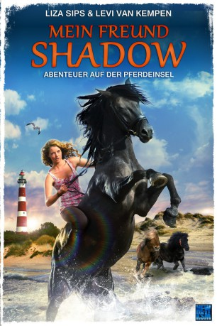

#8390 Mein Freund Shadow - Abenteuer auf der Pferdeinsel
Alternativ: Penny's Shadow
 
 IMDB-Wertung: 6.2 / 10
IMDB-Wertung: 6.2 / 10  Metascore: 0
Metascore: 0 
Lisa ist 17 Jahre alt und hat eine ganz besondere Beziehung zu Pferden. Zusammen mit ihrer Mutter, der kleinen Schwester Tess und deren frechen Pony Rakker verbringt sie den Urlaub auf der niederländischen Insel Ameland, wo sie in einem Camp auf der Farm des 18-jährigen Kai und dessen Vater wohnen. Kais Mutter starb vor Jahren bei einem Unfall mit ihrem geliebten Pferd Shadow. Der schwarze Hengst überlebte, wurde aber schwer traumatisiert und lässt sich seitdem nicht mehr reiten. Kai, der den Unfall miterlebte, ist seither wütend auf das Pferd. Lisa ermutigt Kai wieder mit Shadow zu reiten, doch Kai wehrt sich dagegen. Da schmiedet Lisa einen geheimen Plan, wie sie Kai und Shadow helfen kann...
Jahr: 2011
Dauer: 99 Minuten
FSK: 6
Land: Niederlande Studio: New KSMTonspuren:
Untertitel: Deutsch,
Auflösung: 1080p (1920x816) Größe: 4659 MB
Genre: Abenteuer, Liebe
Regisseur: Steven de Jong
Drehbuch: Lars Boom
Soundtrack:
Darsteller:
- Monic Hendrickx als Moeder Kai
- Lieke van Lexmond als Reisleidster
- Levi van Kempen als Kai
- Liza Sips als Lisa
- Valerie Pos als Tess
- Tanja Jess als Daphne
- Rick Engelkes als Erik
- Bas de Nijs als Dino
- Roos Smit als Jessica
- Vivian van Huiden als Chantal
- Gaby Blaaser als Jorine
- Linsey Neelen als Mirte
- Ruben Arnhem als Klaas
- Sjoerd Dragtsma als Roy
- Job Bovelander als Yuksal
- Pim Wessels als Anthony
- Leo de Jong als Ralf
- Rense Westra als Opa
- Colin Banks als DJ Feest
- Neapolitano XXIX-18 als Shadow
- Siglavy Capriola XVII-21 als Shadow Stand-in 1
- Sjoerd als Shadow Stand-in 2
- Maaike als Shadow Stand-in 3
- Malle als Rakker
Datei: X:\2011(G-M)\Mein Freund Shadow - Abenteuer auf der Pferdeinsel (2011, FSK6, 1920x816).mkv seit 28.02.2018
Festplatte: HD 2011(G-Z)
 Es gibt insgesamt 100 Filme in der Gruppe '2011(G-M)'
Es gibt insgesamt 100 Filme in der Gruppe '2011(G-M)'